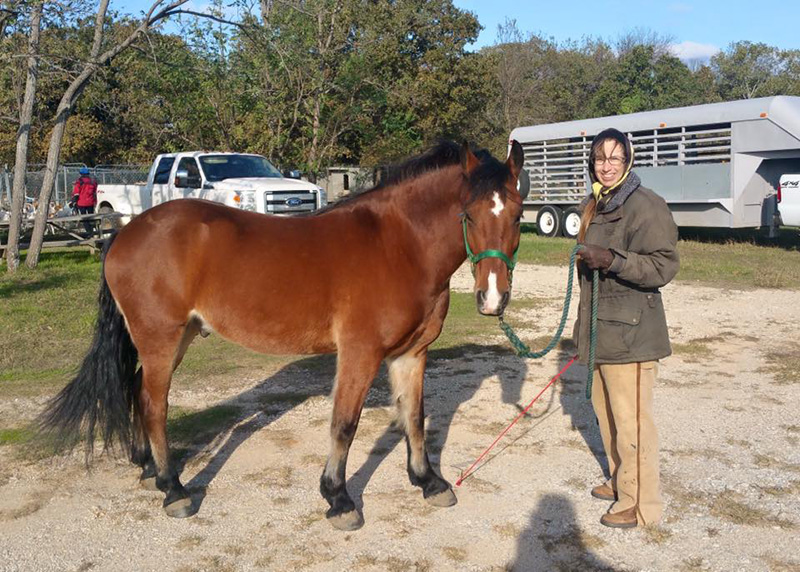
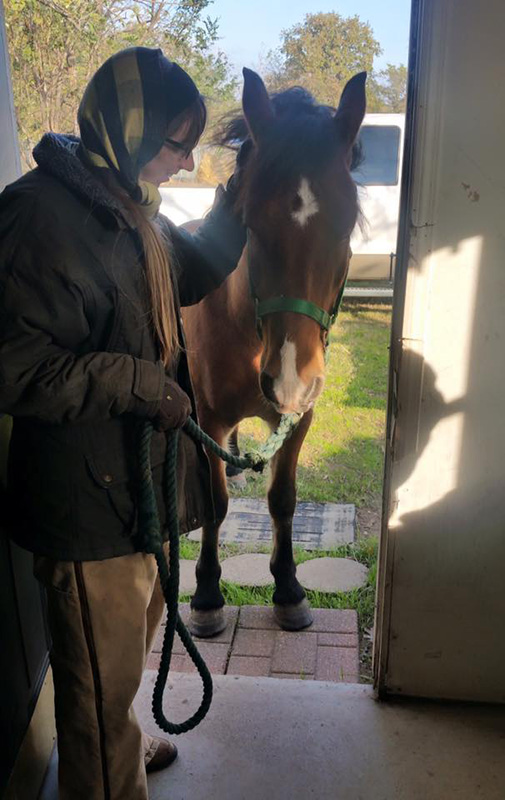
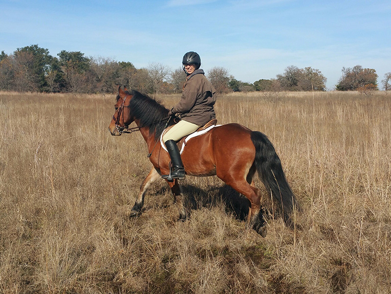
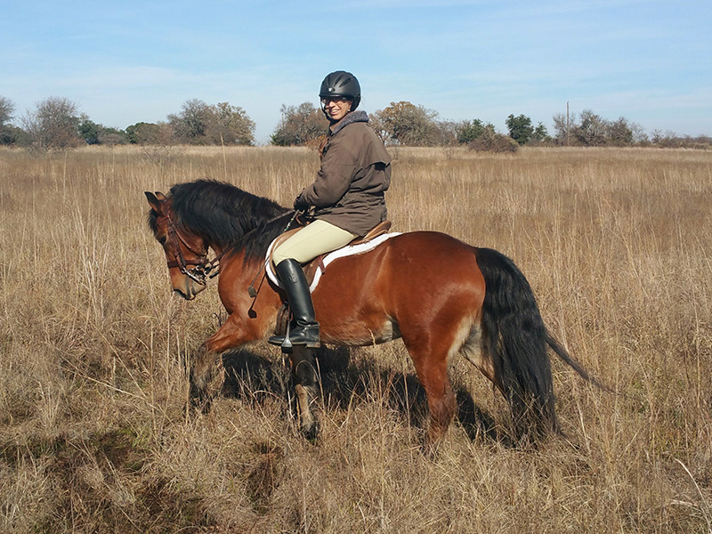
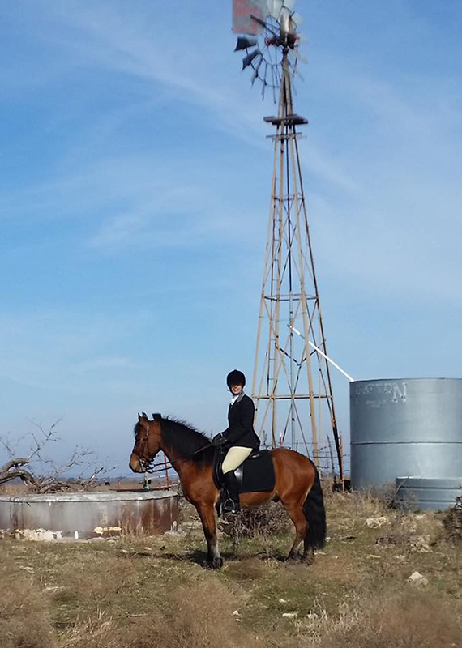

11/21/15 Topper
learning about Fox Hunting
Rarely have I had a horse start out during the hunt season.
I like to have the summer to walk out with the hounds at the kennels.
This year I'm trying to introduce Topper, but not introduce too much at once.

He
was so obedient his first time at the kennels. We walked out and he was aware of everything, but stayed right by me without
crowding or getting silly.

It was a cold day and we all hung out in the kennel building. Topper
stayed right with us and even came in when asked.

Out on the trail ride he was energetic and obedient. He got a little excited half way through when I think his mind
was feeling overwhelmed, but the other horses kept him calm.

He was anxious after a couple of hours, but was careful through the mud and crossed the creeks very nicely.

Out
with the hunt has been very exciting, but he's learning what to expect. I hope to be out
of the dressage saddle soon, but for now it gives me a bit more security when he gets playful.
I'm sure it's hard to stay calm with other horses and hounds running around.
Typically a new horse would get to watch it from a pasture at the kennels until it wasn't
anything special. Here he's learning about it out in the field. I'm lucky that there are
hunt members who will stay with us to help keep him calm.